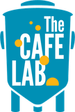

Six Spike Fermenter Plus tanks · two Sennos M3 tanks
Read only for now. These show the current state and will become adjustable in a later version.
Ingredients and steps for one batch. Leave out anything that doesn't apply.